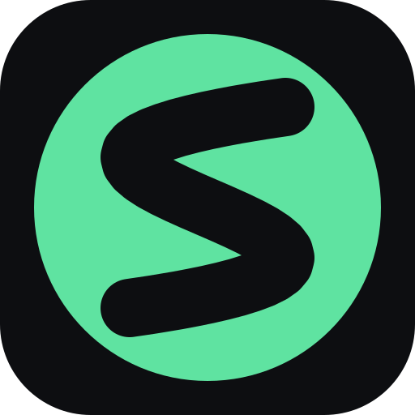

Join an OpenStream room
Opening OpenStream…
If OpenStream did not open, install it and click the link again, or paste the ticket into the start screen.
This link carries no ticket. Ask someone in the room for a new one.

Opening OpenStream…
If OpenStream did not open, install it and click the link again, or paste the ticket into the start screen.
This link carries no ticket. Ask someone in the room for a new one.